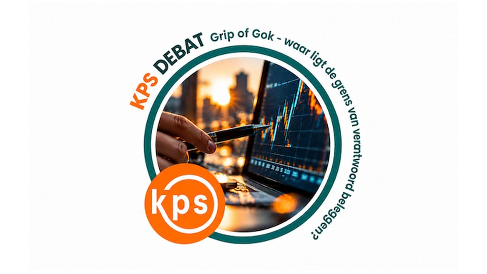

Congres · KPS Debat
KPS Debat 2026 – Grip of gok: waar ligt de grens van verantwoord beleggen?
Hoeveel risico durf je te nemen met het pensioen van morgen? En wanneer verandert verantwoord beleggen in een gok? Tijdens het jaarlijkse KPS-debat gaat debatleider Jannie Benedictus de confrontatie aan met drie actuele dilemma's. Je kunt niet alleen luisteren, maar je per stelling ook aanmelden om actief mee te debatteren. Georganiseerd door de KPS Werkgroep Beleggingen.
- VS-concentratierisico: grip op geopolitieke risico's of bewust wegkijken? Inleider: Peter Spijkman, Investment Strategist Aegon AM
- Koopkracht versus risico: hoeveel zekerheid mag koopkracht kosten? Inleider: Thomas van Galen, Chief Strategist Achmea IM
- Uitbesteden versus zelf doen: waar eindigt grip en begint de gok? Inleider: Alfred Slager, professor VU, bestuurder en adviseur
- 14.00 – 17.30 uur
Eerstvolgende data
- 27 november 2026 · KPS Debat: Grip of gok
FITZ Utrecht